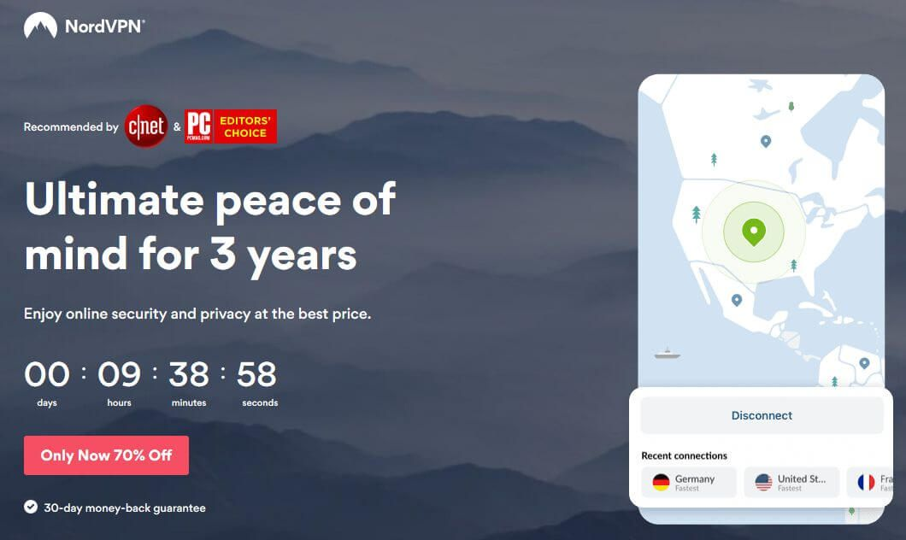

NordVPN Review
8.6
Very Good
Our verdict: Award-winning. Loved by some of the biggest tech blogs. Fast and super-private. NordVPN checks all the right boxes!

Summary Review
NordVPN has a really bold promise and that is to offer “the world’s most advanced VPN”. So far, they have been living up to this promise by ensuring tight security and privacy as well as advanced functionality, all at a really budget-friendly price.
You can expect to see a strict “no logs” policy, user-friendly interface, and well-designed applications, an excellent level of performance, along with a new set of extras that sets it apart from the competition. One of these extras is a feature called SmartPlay that can be a game-changer for those who binge-watch a lot of shows on sites like Netflix or Hulu. What it does is to give you access to over 150 geo-restricted streaming services. Another handy feature is called WifiSec which automatically connects you to NordVPN whenever you join both secure or unsecured WiFi networks. This gives you the peace of mind knowing that your connection is always private.
Privacy / Anonymity
Unlike other providers that offer only one or two security protocols and additional proxy as a paid add-on, NordVPN offers a host of powerful security protocols such as IKEv2, OpenVPN, WireGuard, and a free SOCKS5 proxy for app-level security. It also offers a kill switch feature that automatically ends your connection to a network that is being compromised by a cyber hacker or spy. They have a strict policy against logging and cooperating with law enforcement agencies. In addition, they have a feature aptly called WifiSec that skips annoying ads and blocks malicious and potentially harmful sites.
Streaming and Torrenting
NordVPN is one of the most reliable VPNs when it comes to bypassing Netflix’s notoriously aggressive detection measures. As we have mentioned previously, it has a proprietary SmartPlay DNS feature that works beautifully in accessing content from 150+ streaming sites such as Netflix, Hulu, Amazon Prime, Cartoonnetwork, Zattoo, WeTV.com, Vevo, PBS, Spike, DramaFever, and many more. NordVPN also has instructions and information on how to stream on their FAQ section. Not that you’ll ever need it as the SmartPlay feature works automatically, there’s no need to configure anything in your settings.
As far as torrenting is concerned, NordVPN is still your best bet. It has dedicated P2P servers that you can easily access from within the app. They have a neat server recommendation tool on their website but if you can’t be bothered, you still can get the best P2P server right within the VPN interface.
Speed and Reliability
One of the things that turn people off from using a VPN service is the fact that it can result in a speed loss of as much as 60-70%. After all, what use is being able to unblock content from across the world if it means your connection becomes unstable and sluggish? Thankfully, such is not the case with NordVPN. We tested its speed by connecting to a US and UK server and noticed only a small speed drop of between 5 to 10% which is very impressive.
Platforms and Devices
You won’t be disappointed by NordVPN’s promise that it has a VPN for ALL of your devices. It supports all major platforms such as Windows, macOS, Linux, Android, iOS, and Android TV. They also offer encrypted proxy extensions for Chrome and Firefox. Furthermore, there are plenty of options for manual configurations for some exotic platforms like Raspberry Pi and pfSense as well as for Windows XP, Blackberry, and plenty of other router firmware. What’s more, NordVPN allows 6 simultaneous connections which are good enough for an entire family, gadget freaks, or a small business.


Server Locations
Currently, NordVPN offers 5,522 servers in 58 countries which is more than enough coverage for your day to day VPN needs, even for the most advanced users. They even have coverage in other regions not covered by other vendors such as Africa, the Middle East, and India. What’s more, NordVPN works in countries where censorship is in place like China.


Customer Service
We like that NordVPN offers a 24/7 live chat option that is accessible all throughout their website. They even offer Non-English chat support. We tried connecting to a support agent and threw him some basic and technical questions. His answers were direct, concise, and polite. Navigating the support page is also really easy with separate categories on FAQ, General Info, Billing, and Connectivity.
Pricing
NordVPN currently offers 4 all-inclusive plans. You basically get the same features on every plan and the price varies depending on the length of your subscription. Understandably, the longer the commitment, the cheaper it gets. They have a month-to-month plan which costs $11.95. Commit to a 1-year plan and the monthly fee dwindles to $6.99 per month while a 2-year plan is available at $4.99 monthly. The 3-year plan is obviously the cheapest in the long run as you pay only $3.49 monthly, a huge savings of 70%! No matter which plans you choose, you are backed with a 30-day money-back guarantee.
NordVPN User Reviews
- "All Good! The team gives answer very fast if you need for help and the connection in fast and safe."
- "I love that is works great with Windows and Android and the only issue I have it that is seriously slows down connection on Android as on the Windows PC it is doing much better with tweaking, but the Android devices it slows to 25% of the average download speeds."
- "NordVPN has been providing their EXCELLENT service to me for over 2 years. Thanks, this works."
- "reliable, fast, fantastic support.....shame Nord isn't able to cook my dinner. Maybe with the next update. Highly recommended !"